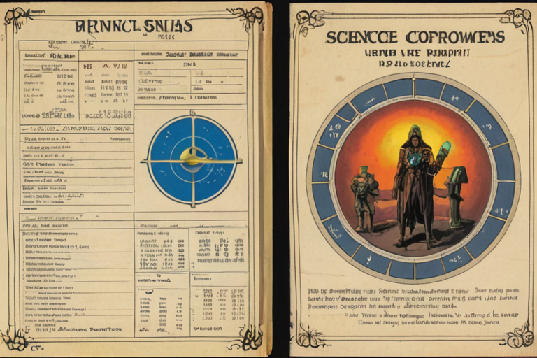
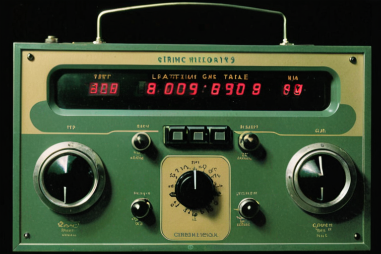
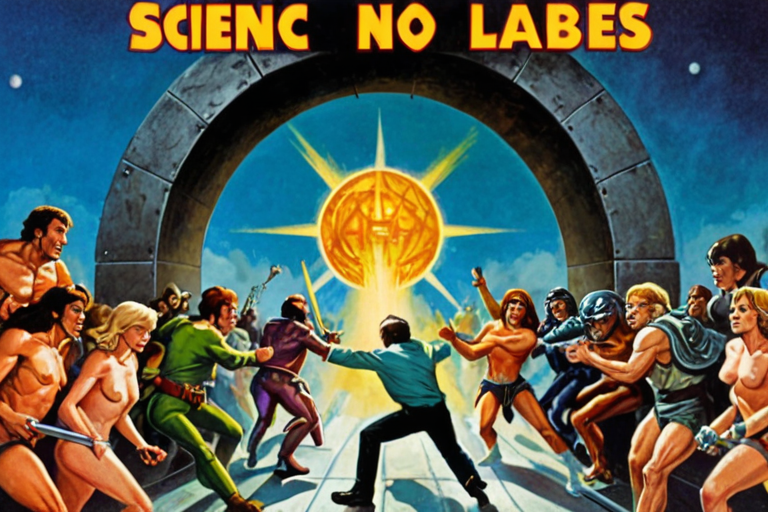
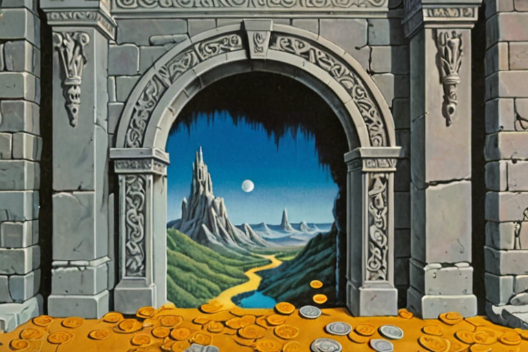

Total value of commerce that .kasset transactions could intermediate — US + Japan only.
A .kasset formalizes three forms of human economic output. Each form maps to existing macro data with no overlap between segments. Two additional layers capture value that SSK creates or recaptures beyond existing commerce.
Segment 1: Physical Objects — $7.8T
Any physical good — manufactured anywhere, purchased with fiat, minted by the original owner as a provenance .kasset. Includes all retail, all consumer goods, all secondhand.
NAICS proxy: 44-45 (Retail Trade).
Segment 2: Service Agreements — $18.0T
§ 1. TAM: $32.5TGeographic filter: US + Japan. Demographic filter: age 15+.
The TAM is already scoped to US + Japan. The SAM applies a single demographic gate: anyone aged 15 or older — the population legally eligible to participate in commerce.
At 15+, participants account for ~96% of consumer spending and ~100% of labor compensation. The SAM excludes only economic activity attributable to minors under 15.
SAM = TAM × 0.96 = $31.2T — effectively the full US+Japan TAM, reduced marginally by the age gate.
The SAM is intentionally broad. SSK is not a niche privacy product — it is a universal commerce layer. The narrowing happens at SOM, where beachhead communities define Year 1 execution.
§ 2. SAM: $31.2TPer-Capita SAM Activity
The SAM represents $31.2T of annual economic activity across 385M people (US+Japan, 15+).
Per-capita annual economic activity: $31.2T ÷ 385M = $81,039/person/year.
This is the theoretical ceiling — if a single person routed 100% of their economic life through .kasset transactions.
Beachhead Communities (doc 07)
SSK launches into four overlapping communities with high privacy motivation and low hardware barriers. The addressable value for each segment is derived from population × per-capita SAM activity:
§ 3. SOM: Beachhead Derivation from SAMCAC by Scenario:
Planning CAC: $6.04 (Goldilocks). Competitive: average consumer app CAC is $30-$100 (Liftoff 2024), SaaS CAC is $100-$400 (ProfitWell 2024). SSK's structural advantage is zero marginal compute cost — the user's device runs inference, training, and minting.
Churn Evidence & Retention Thesis
The 5%→2% monthly churn projection is conservative relative to social platform benchmarks:
SSK's retention advantage is structural, not behavioral. Three switching costs compound over time:
Idiolect lock-in. The twin trains continuously on the owner's speech patterns, vocabulary, and decision history. This training data cannot be exported or replicated on another platform — it is cryptographically bound to the user's hardware security module. Leaving SSK means abandoning months or years of cognitive calibration.
§ Per UserSegment breakdown (M12): The ⚡300 average is volume-weighted across all segments:
Early-stage fee compression (M1-M6): The progressive fee formula (ramsey(rarity) × rawlsian(buyer_⚡_balance²) × energy_proportionality(REC)) includes a quadratic buyer-balance component that barely activates in early months when all users have near-zero ⚡ balances. The effective weighted fee in M1-M6 will converge toward the Ramsey floor (~1-1.5%) rather than the modeled 2.38%. This shifts the early-stage breakeven from ~14,200 to ~19,000-22,700 users. The fee naturally rises as user balances accumulate through trade activity. The 2.38% weighted average is the steady-state M12 projection, not the launch-day reality.
Derivation: (0.40×100)+(0.35×300)+(0.20×500)+(0.05×800) = 40+105+100+40 = ⚡285 → ⚡300 (rounded up for conservatism)
§ Per Trade (M12 parameters)Note: In MSA markets (NYC, Tokyo, Tier 1 cities), SSK is the sole operator — there is no operator split. This section applies only to non-MSA franchise operators.
Breakeven derivation: $2,500 ÷ $1.01/trade = 2,475 trades needed. At 450 users × 6.08 trades/user = 2,736 trades/mo → breakeven ✓
§ Per Non-MSA OperatorProduction infrastructure: $2,150/month. The certification service, Codex archival, and CDN are the only infrastructure required to operate the network. The $5,000 agent swarms line is development tooling (multi-agent orchestration for codebase development) — it can be reduced or eliminated post-launch. The self-funded survival floor (Doc 01) uses $2,150 + founder living = ~$2,400/month burn, producing breakeven at 325-488 users.
Derivation: M24 MRR = $39,019,008 (SSK share). $7,150 ÷ $39,019,008 = 0.018% ✓
§ Infrastructure Costs (Fixed)Gross margin comparison:
· OpenAI: ~50-60% (estimated, GPU-heavy)
· Sovereign Survival Kit: 95%+ (near-zero marginal cost)
§ The Zero-Cloud AdvantageAs total delivered energy costs decline (driven by solar LCOE –88% since 2010, with a durable infrastructure floor from transmission/distribution), Sovereign Survival Kit's zero-cloud architecture gains a compounding advantage:
Net effect: In a declining-energy-cost future, cloud AI companies still need data centers, cooling, and staff. Sovereign Survival Kit needs nothing — the user provides the compute, the energy, and the intelligence. As delivered energy cost decreases, Sovereign Survival Kit's marginal cost curve converges toward true zero, not just near-zero. Self-generators who bypass the grid entirely achieve full energy sovereignty. (See doc 23, §8.)
§ The Energy Convergence Advantage
A core driver of the Sovereign Survival Kit unit economics is the permanently inverted fee schedule for fundamental physical labor (agriculture, carpentry, plumbing). By structurally subsidizing tradesmen identified purely by their thermodynamic utility to human persistence, the network captures an immediate hyper-local monopoly.
[!IMPORTANT]
The Processing Fee Recovery: Tradesmen operating on the network pay a 1.0% certification fee (lowest tier) versus 2.9% + $0.30/transaction in the legacy payment stack (Stripe, Square, PayPal). A plumber doing $80K/year in transactions immediately recovers ~$1,520/year in processing fee savings alone — with no payment processor lock-in, no chargebacks, and no 3-day settlement delays.
Because the network offers structurally lower fees, instant settlement, and zero platform dependency, tradesmen face a strong economic incentive to stay. Returning to legacy payment rails would mean higher processing costs and slower cash flow. This creates durable retention among the foundational labor class of the economy.
§ Protected Trades & Fee Recovery$3M Seed. This is extremely lean by design — Sovereign Survival Kit has zero cloud compute costs, zero hardware manufacturing drag at launch, and a 3-person core team augmented by internal agent swarms.
The Spark Treasury Bootstrap (SETI Compute Protocol)
We do not allocate seed money towards highly depreciative, centralized GPU farm scaling (e.g., purchasing 50+ RTX 4090s). The initial network liquidity (The Spark Treasury) cannot be arbitrarily minted; it must be backed by physical physics computation.
To bootstrap the L2 sequences before global critical mass is reached, Sovereign Survival Kit utilizes a "SETI@home" style Genesis Compute Protocol running on the Founder's pre-existing hardware pool:
· Genesis Pool: 1x RTX 3080 Ti laptops.
· By executing the σ conversion formula on this local device and certifying the genesis provenance entries, the Sovereign Survival Kit protocol technically "pays" this cluster in natively minted Sparks (⚡). This physically-derived Spark forms the initial Company Treasury used to purchase Base Codex Bounties.
§ 1. The Seed Ask & Use of FundsMulti-Stream Revenue (Zero Data Monetization)
Sovereign Survival Kit architecturally cannot monetize user data. Revenue derives from multiple streams:
What we do NOT charge: listing fees, distribution channel fees (direct distribution), data monetization (architecturally impossible), payment processing (σ is native), content moderation headcount (Rule 2 is hardware-enforced).
§ 2. Revenue ModelEvery number below is derived from the assumptions above. The math is shown.
Planning Scenario: Goldilocks (k = 0.3, ~59K users at M12)
User growth is demographic-grounded from NYC MSA (16.5M age 15+) + Tokyo Metro (32.9M age 15+) = 49.4M addressable. Onboarding via Campus Bridge (peer-to-peer). Growth is NOT bounded by physical Vault locations.
Why Goldilocks: k = 0.3 means one new referral per user every ~10 weeks. The introduction economy works but does not go viral. Organic exceeds organized by M8. The company survives at k ≈ 0 (No Traction: 18,382 users, still cash-flow positive — Cheat Sheet §Scenario 1), but plans at k = 0.3.
Benchmark: Instagram reached 10M in Y1 (iOS only, 65M addressable). SSK modeled at 1/40th Instagram penetration, adjusted for higher friction.
SSK is the sole operator in all MSA markets (100% of fees). 70/30 split applies only in non-MSA franchise markets.
§ 4. Revenue ProjectionsPer User
CAC by growth scenario:
Marketing Funnel (Full Traction Scenario, k=0.6)
The funnel below illustrates the Full Traction scenario (250K users). The Goldilocks planning scenario (59K users) uses the same paid channels but with lower organic referral volume (k=0.3 vs k=0.6):
Channel breakdown of $355K marketing spend:
Note: The $1.42 blended CAC applies only to the Full Traction scenario (k=0.6). Goldilocks planning CAC is $6.04 ($355K ÷ 59K users). The per-channel CAC ($3.00-$6.67) is the honest cost of paid acquisition regardless of scenario.
§ 5. Unit EconomicsThe Unfair Advantage: Zero Cloud Compute
Traditional AI companies (OpenAI, Anthropic) burn billions on GPU clusters for inference. Sovereign Survival Kit inference runs entirely on user-owned hardware. Scaling from 1,000 to 1,000,000 users costs us $0 in additional compute.
Fixed Costs
Variable Costs (Scale)
Gross margin: 95%+ at all scales.
§ 6. Cost StructureTLM, COO, DevOps, and GC receive cash compensation only — no equity, no options. Upside participation through the Nevada Irrevocable Trust at the founder's sole discretion. GC coordinates specialist outside counsel for patent prosecution and complex litigation. Engineering needs (certification service, edge app, bilateral signing protocol) may require specialized contractors funded from the operating reserve.
Headcount Summary
§ 7. Headcount & Payroll (36-Month)Revenue is derived by summing monthly projections from Section 4. Year 1 = M1–M12, Year 2 = M13–M24, Year 3 = M25–M36.
Revenue derivation (all streams, per Section 4):
· Year 1: Certification (post-attrition) + Courier + Vault subscription + Vault Freeze + Verification/Coordination. No hardware (ships M15). Total: $38.5M Full Traction / $9.5M Goldilocks (per Multi-Stream Revenue Summary above).
· Year 2: + Hardware (Tether, Compass, Sensors, Accessories) from M15. Total: $1,428.4M Full Traction.
· Year 3: Full global expansion. Total: $8,789.2M Full Traction / $2,198.2M Goldilocks.
Cash Flow (Full Traction scenario — Goldilocks produces ~25% of these revenue figures):
§ 8. 36-Month Cash FlowThe following product streams are detailed breakdowns of the multi-stream revenue already projected above. B2B streams are permanently rejected:
~~B2B Licensing~~ — PERMANENTLY REJECTED
Founder directive (2026-04-15): These streams will NEVER be pursued: Biometric Certification SDK Licensing, 7Vs Quality Grading API (white-label), Swarm Contract SDK, Constituent Intelligence Platform (B2G), Enterprise API of any kind.
Vault Product Suite
Hardware Product Suite
Revenue Summary
§ 10. Revenue Stream DetailsPolicy: No federal/state government grants. NYC-local arts grants (no supervision) and non-governmental sources only.
Tier 1: Active Revenue (Immediate)
Tier 2: Crypto Ecosystem Grants (Cash)
Tier 3: Startup Competitions (Equity-Free Cash)
Tier 4: Arts & Culture Grants (via Fiscal Sponsor)
Tier 5: Alumni Angel Network (Low-Dilution SAFEs)
§ 11. Non-Dilutive Funding Pipeline (Pre/Alongside Seed)Standard venture practice dictates kill/continue gates — milestones where the founder commits to returning capital if metrics aren't met. The implicit logic: "if the product hasn't worked by month X, cut losses and stop burning investor money."
That logic assumes a cost structure where each month of operation consumes capital that cannot be recovered. Kill gates protect investors from a company that bleeds money while searching for product-market fit.
SSK's cost structure eliminates the premise. Monthly infrastructure: $7,150. Survival burn: $80,000/month. $3M provides 37 months of runway at zero revenue. Breakeven: 14,200 trading users (19,000-22,700 during early-stage fee compression). The worst-case growth scenario (k=0.05, No Traction) produces 18,382 users by M12 — above breakeven when the viral coefficient is nearly zero.
At every standard kill gate milestone, the company is alive:
The question is not "when do we kill?" but "what would have to be true for this company to die?"
For the company to die, ALL THREE conditions must hold simultaneously:
§ 12. Survivability Proof (Why Kill Gates Don't Apply)Assumptions:
· Digital onboarding via Campus Bridge (peer-to-peer). Growth NOT bounded by Vault locations.
· Demographic-grounded: NYC MSA (16.5M age 15+) + Tokyo Metro (32.9M age 15+) = 49.4M addressable.
· Modeled at 1/40th Instagram Y1 penetration rate (adjusted for higher friction).
· SSK is sole operator in MSA markets (100% of certification fees).
Planning scenario is Goldilocks (k=0.3). See Doc 11 §4 for the Goldilocks projection table (59K users M12, 2.5M M36, $2,198M Y3 total revenue). This scenario (Full Traction) represents the upside if the introduction economy achieves moderate virality.
§ Scenario A: Full Traction (k = 0.6)Assumptions:
· Connect fails to achieve product-market fit in MSM beachhead.
· Marketplace adoption is 20% of base case (1/5th).
· No Series A. Only seed funding.
Derivation (M12): 50,000 × 6.08 = 304,000. 304,000 × $81 × 2.38% = $586,035 ✓
Derivation (M36): 2,000,000 × 6.08 = 12,160,000. 12,160,000 × $154 × 3.25% = $60,860,800 ✓
§ Scenario B: Downside (Beachhead Stall)The base case uses 6.08 trades/user/mo (73/year), derived from SSK segment-weighted analysis (Appendix §A5: blended 6.5, conservatively rounded to 6.08; cross-checked against Amazon purchase frequency). Using M12 parameters (250,000 users, ⚡300 avg trade, $81 avg trade value, 2.38% weighted fee, 100% MSA take):
Derivation (breakeven): $2,003,000/yr ÷ 12 = $166,917/mo. $166,917 ÷ $1.93/trade = 86,485 trades. 86,485 ÷ 250,000 users = 0.35 trades/user/mo ✓
Implication: Trade frequency can fall to 5.7% of the base estimate before the company fails to cover Y1 operating expenses. At 50% of base (3.04 trades/mo), revenue is $17.6M — still 8.8× total expenses. The model is structurally robust against trade frequency assumptions because the zero-infrastructure-cost architecture means the breakeven bar is extraordinarily low.
§ Key Sensitivity: Trade FrequencyNote: This applies ONLY to non-MSA franchise operators. In MSA markets, SSK is the sole operator (no split).
Using M18 parameters (⚡500 avg, $120 avg trade, 2.80% fee, 6.08 trades/user/mo):
Derivation (breakeven): $2,500 ÷ $1.01 = 2,475 trades/month needed. At 450 users × 6.08 = 2,736 → breakeven ✓
Implication: At 6.08 trades/user/mo, non-MSA operators need only ~450 attributed users to break even. This is achievable by ~M15. The 6-month USD stipend bridges pre-breakeven.
§ Key Sensitivity: Non-MSA Operator Breakeven1.1 General Tau Theory (David Lee)
General Tau Theory (Lee, 1998, 2009) establishes that biological action systems are guided by the variable τ — the time-to-closure of a gap between the current state and a goal state. The key findings:
· τ_d(t) = time-to-closure of the gap in domain d. As the gap closes, τ → 0. At closure (rest), τ = 0.
· τ̇_d(t) = rate of closure. τ̇ = −1 means perfect constant-velocity approach. τ̇ < −1 means decelerative (soft landing). τ̇ > −1 means accelerative (hard arrival).
· τ-coupling: Skilled, coordinated action is characterized by the coupling equation τ₁ = k · τ₂^α, where multiple action systems maintain a power-law relationship such that they all reach zero at the same instant. The coupling exponent α determines the approach profile (smooth vs. abrupt), and the goodness of fit (R²) measures coordination quality.
· The harmony: When multiple τ profiles across different domains are coupled with R² → 1, all gaps close simultaneously. This is what Lee calls "τ-guided action" — the moment when everything converges to rest at once.
§ 1. Theoretical Foundation
2.1 Per-User State
For user i, the twin maintains continuous measurements across D sensor domains (cardiac, conversational, gestural, environmental, financial, social, spatial, creative — the 8 domain registers of Doc 03):
The raw units (bpm, ppm, Hz, $/trade) disappear at τ. Every domain is measured as a time-to-closure — how far is the current state from the goal state, expressed in units of the reference frame period. This is the key architectural insight: τ strips units, enabling cross-domain coupling measurement.
2.2 Convergence Measure
The convergence measure Ψ quantifies the instantaneous harmonic quality — how closely multiple domains are simultaneously approaching rest (τ → 0) in a coordinated manner:
Where:
§ 2. Definitions3.1 Instantaneous Trade Probability
The probability that user i initiates a trade in the interval [t, t + dt] is:
Where:
Physical interpretation: When harmonic convergence Ψ_i exceeds the population median, the user trades more frequently than average. When Ψ_i is below median (domains uncoordinated, gaps far from closure), the user trades less. The exponent α captures whether trade response is proportional to convergence quality (α=1) or explosive above a threshold (α>1).
3.2 Expected Monthly Trade Frequency
The expected number of trades for user i in one month (T = 1 month):
§ 3. Layer 1: Individual Trade Rate5.1 The Revenue Integral
Where each component is itself a dynamic function:
5.2 Trade Frequency F̄(t)
The population mean of individual trade frequencies. NOT constant. It varies with:
· Seasonal effects (campus activity → more gaps opening and closing → higher Ψ̄ during academic year)
· Network density (denser mesh → more opportunities for simultaneous gap closure → higher Ψ̄)
§ 5. Layer 3: RevenueThe algebraic model is obtained by evaluating the calculus model at its steady-state fixed point and linearizing:
When the approximation holds:
· N << K (far from carrying capacity)
· Fee distribution at equilibrium (M6+)
· Population Ψ̄ near its long-run mean (no extreme convergence events)
When it breaks:
§ 6. Algebraic Model as First-Order Approximation
The calculus model has five population-level parameters that must be calibrated empirically:
Full parameter inventory: The five parameters above govern the population dynamics. The per-user Ψ computation introduces additional parameters: D domain weights w_d (8), up to D(D-1)/2 coupling exponents α_{d,e} (28 for 8 domains), and the R² rolling window length W. These per-user parameters are either fixed a priori (if resolution path (a) is chosen for the circularity problem, §2.2) or learned online (if path (b) is proven). The fee integral (§5.4) adds the ramsey() and rawlsian() functional forms, which must be specified before calibration. Total effective parameter count: ~40+ per user when weights are learned, ~5 population-level when weights are fixed. The honest position: the model is parsimonious at the population level and high-dimensional at the individual level. Calibration requires sufficient trade events per user to constrain the individual parameters — the 1,000-user threshold assumes ~6,000 monthly trade observations.
Open item (stability): The coupled ODE system (N depends on Ψ̄, Ψ̄ depends on N through network density, φ depends on balance distribution which depends on N) contains positive feedback loops. Fixed-point analysis, stability conditions, and existence/uniqueness of solutions are required before this model can be submitted for formal review. Deferred to post-TLM review.
The verification hook applies here. The investor's onboarding IS the first empirical measurement of these parameters. Their interaction with the system produces a Ψ measurement — how many of their internal domains converge toward resolution during the experience. Their referral behavior (do they tell someone?) measures k₀. Their trade frequency measures λ₀. The proof is not in the equations. The proof is in what happens when a skeptical, high-agency individual encounters the system.
§ 7. Empirical Calibration
This model is falsifiable. Calibrate λ₀, α, k₀, K, and Ψ_ref from the first 1,000 users and compare predicted N(t), F̄(t), and R(t) against observed values. If the model predicts accurately, the thesis holds. If it doesn't, the deviation tells you exactly which parameter was wrong and how to fix it.
"How do you know this maps to reality?"
Try it.
Sovereign Survival Kit — Series A Data Room. Document 12B. Confidential.
§ 8. Notation SummaryTotal value of commerce that .kasset transactions could intermediate — US + Japan only.
A .kasset formalizes three forms of human economic output. Each form maps to existing macro data with no overlap between segments. Two additional layers capture value that SSK creates or recaptures beyond existing commerce.
Segment 1: Physical Objects — $7.8T
Any physical good — manufactured anywhere, purchased with fiat, minted by the original owner as a provenance .kasset. Includes all retail, all consumer goods, all secondhand.